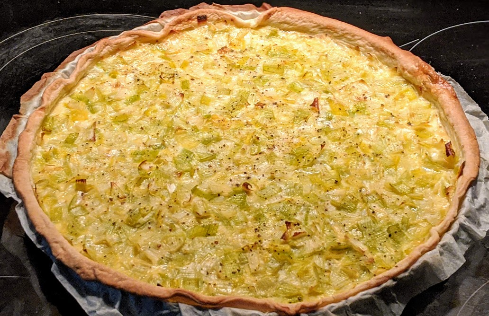

Quiche aux poireaux

- Une pâte brisée au beurre
- Quatre poireaux pas trop gros
- 30g de beurre
- 3 œufs
- 20cL de crème liquide
- (Facultatif) 50g d'emmental râpé
- Un peu de lait
- Sel, poivre
- Laver et émincer la partie blanche des poireaux (garder le vert pour faire de la soupe ou du bouillon).
- Faire fondre du beurre au fond d'une grosse casserole, et y faire cuire les poireaux à feu doux pendant un gros quart d'heure.
- Pendant ce temps, faire préchauffer le four à 180°C, disposer la pâte brisée sur un plat à tarte, la piquer partout, et la faire chauffer à blanc dans le four une dizaine de minutes (jusqu'à ce que le fond prenne un peu de couleur).
- Battre les œufs et la crème avec un peu de sel et de poivre dans un saladier jusqu'à ce que ça soit homogène (le mélange s'appelle une migaine). Si on a l'impression qu'il n'y a pas assez de garniture (entre les poireaux et la migaine), ajouter un peu de lait.
- Mettre les poireaux dans la pâte brisée précuite, disposer la migaine sur le dessus, saupoudrer d'emmental si on a envie.
- Enfourner une bonne demi-heure, voire un peu plus (il faut que ait l'air solide lorsqu'on bouge un peu la quiche).
Variante : pour une quiche aux poireaux améliorée, on peut ajouter des oignons caramélisés sur le dessus juste avant d'enfourner, ça va super bien.
Remarque : les méthodes pour faire chauffer une pâte à blanc varient. J'utilise du papier alu roulé en cylindre que je mets le long de la circonférence, pour éviter que les bords ne s'affaissent. On peut aussi utiliser des haricots secs ou des billes de cuisson ; et c'est aussi possible de badigeonner le fond d'un peu de blanc d'œuf pour s'assurer que ça soit étanche. La technique exacte n'est pas d'une importance capitale.
Retour à la liste des recettes